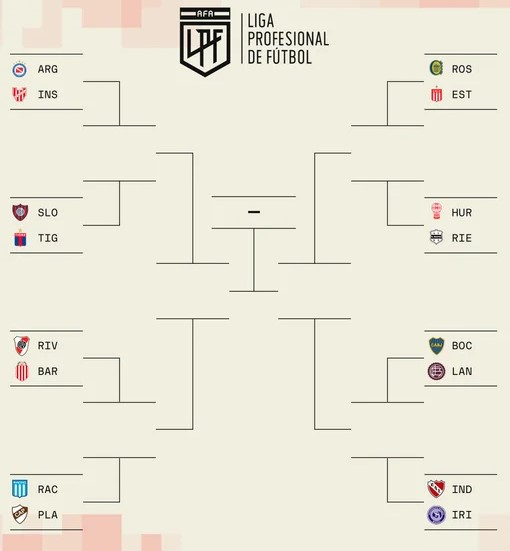

En lo que es la última fecha disputada previo a los playoffs, se encuentra contra Sarmiento en lo que sería para el Ciclón una fecha prácticamente sin importancia porque, a pesar de su resultado, no podría ni subir ni bajar de su posición actual en los playoffs. Aun con todo esto, el resultado quedó en 1 a 1 con los 2 goles siendo en contra: 1 de Vombergar en el minuto 36' y el segundo gol en contra fue de Molina en el minuto 87'.
Con todos los partidos ya jugados de la fecha 16, San Lorenzo se encontrará de rival a Tigre para el comienzo de sus playoffs. Viendo los ultimos resultados de ambos equipos uno pondria a San Lorenzo como favorito, pero en base a situaciones externas y clima, del club formado en Almagro, la situacion o suposicion podria variar. En estadistica podemos notar a que el club de Almagro, no es uno de los clubes que mas goles anota(0.88), aun con esto es el de los clubes que menos goles recibio en el torneo, siendo el 5to equipo con menos goles recibidos (0.62). En el caso de Tigre mete un porcentaje mayor de goles (1.12), pero a su ves recibe una cantidad mayor de goles (0.75).